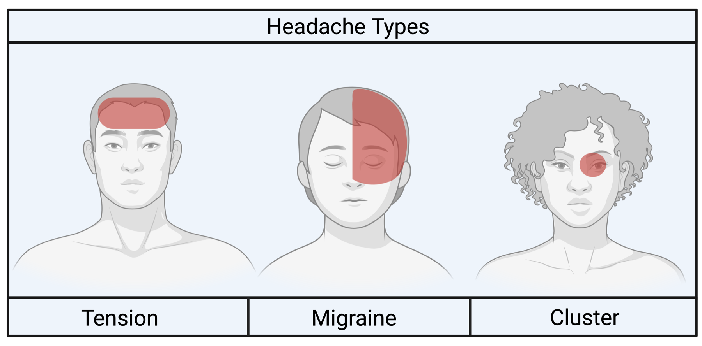

Q1. Discriminador enxaqueca × tensional:
Comparação chocante
A dor que aperta e não vai embora
Lateja e vomita × aperta e fica. O contraste com a enxaqueca.
Prática × prova
Tensional = mais comum na prática. Um pouco mais em mulheres, quase 1:1. Cai menos em prova por ser “sem graça”. Fisiopatologia incompleta; pode haver hiperexcitabilidade menor que na enxaqueca. Deflagradores mais restritos: estresse emocional e tensão muscular (pericrânio, pescoço, trapézio).
Bilateral opressiva
Dor geralmente bilateral, opressiva (“aperta”). Intensidade leve a moderada. Náusea/vômito não costumam. Associados existem, mas não chamam atenção como na enxaqueca.
1 só foto/fono
Pode haver fotofobia ou fonofobia, mas por definição só um; na enxaqueca podem coexistir foto e fono. Pode haver hiperestesia/hipertonia de pescoço e trapézio.
30 min–7 d
Duração: 30 minutos a 7 dias. Mini-cenário: “dorzinha chata” bilateral há 5 dias; o remédio melhora, mas quando passa a dor volta. O que motiva a consulta muitas vezes é a duração, não a intensidade.
Abortivo AINE
Abortivo: analgésico comum / AINE — sem mistério.
Profilaxia ami/nortriptilina
Individualiza. Cortes literários: ≥2 crises/semana ou ≥15/mês (há divergência). Se por meses houver ≥15/mês → tensional crônica. Drogas: amitriptilina ou nortriptilina.
Bordão
Aperta, bilateral, e fica.

Hernandez J et al. J Integr Neurosci. 2024;23(2):43 — CC BY 4.0 · DOI 10.31083/j.jin2302043 · fonte
Onde dói em cada primária
Mapa mostra unilateral migranosa, bilateral em faixa tensional, periorbitária unilateral da salva. Olhar onde dói começa a separar as três.
Quiz
Q2. Profilaxia da cefaleia tensional: